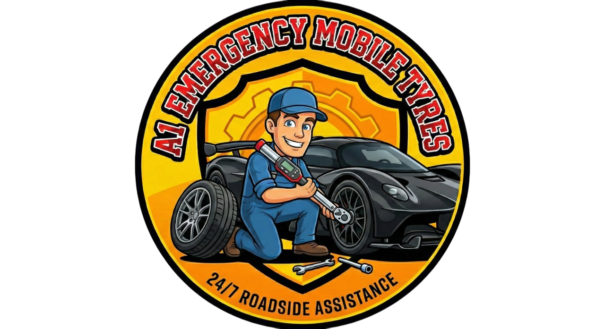

24/7 Premium Roadside Assistance Across the UK
We provide rapid, on‑site 24/7 mobile tyre replacement for all vehicle types—cars, vans, and light commercial vehicles. If your tyre is irreparable, we carry a vast stock of new tyres to fit your vehicle immediately, minimizing your downtime.
* Available for all major makes and models.
Our technicians are experts in assessing and safely repairing punctures according to British standards (BS AU 159). If the puncture is within the legal repair area and structural integrity is maintained, we'll get you back on the road safely and economically.
Lost or damaged locking wheel nuts are no problem. We use specialized, non‑destructive equipment to remove all types of locking nuts without causing damage to your alloy wheels. This service is fast, professional, and available 24 hours a day.
Tyre Pressure Monitoring System (TPMS) lights coming on? We diagnose and repair or replace faulty sensors, recalibrate your system, and ensure your vehicle is compliant and safe. A functioning TPMS is critical for fuel efficiency and safety.
A dead battery can happen at any time. Our mobile units are equipped with high‑powered jump starters to quickly revive your vehicle, whether you are at home, work, or stranded roadside. Fast response times guaranteed.
Rapid 24/7 emergency tyre services and jump starts across Bedford, Luton, Dunstable, and all surrounding areas. We prioritize quick arrival times to reduce your wait.
Reliable roadside tyre assistance, puncture repair, and locking nut removal throughout Milton Keynes, Aylesbury, High Wycombe, and the wider county.
Fast response mobile tyre replacement and TPMS services across Cambridge, Ely, Huntingdon, and all major roadways.
24/7 emergency tyre fitting and battery assistance for Watford, St Albans, Hemel Hempstead, and every corner of Hertfordshire.
Professional roadside tyre services covering Northampton, Kettering, Corby, and all major towns and villages, day or night.
Immediate roadside tyre repairs and replacements in Peterborough and premium mobile assistance across key routes and towns in Essex.